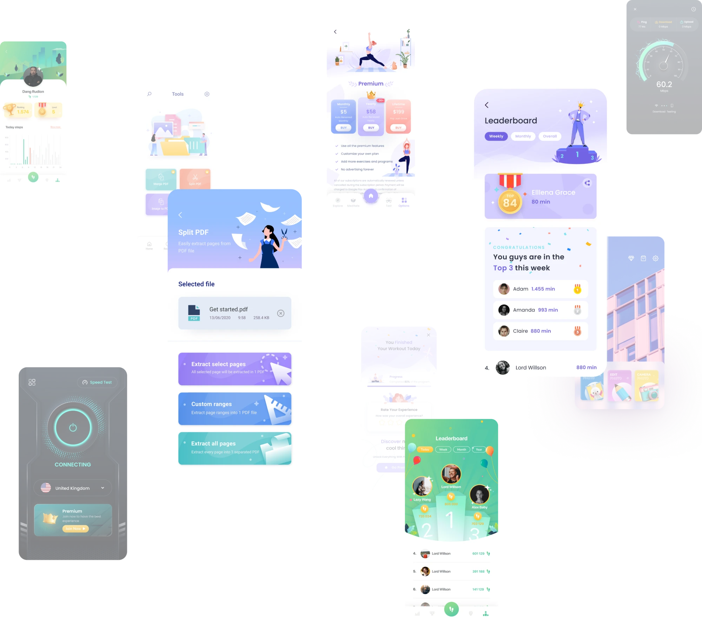
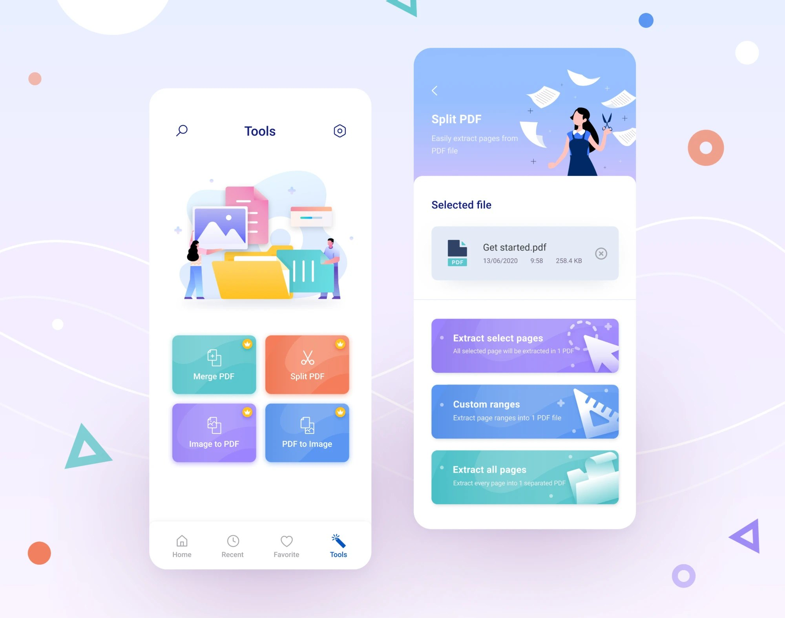
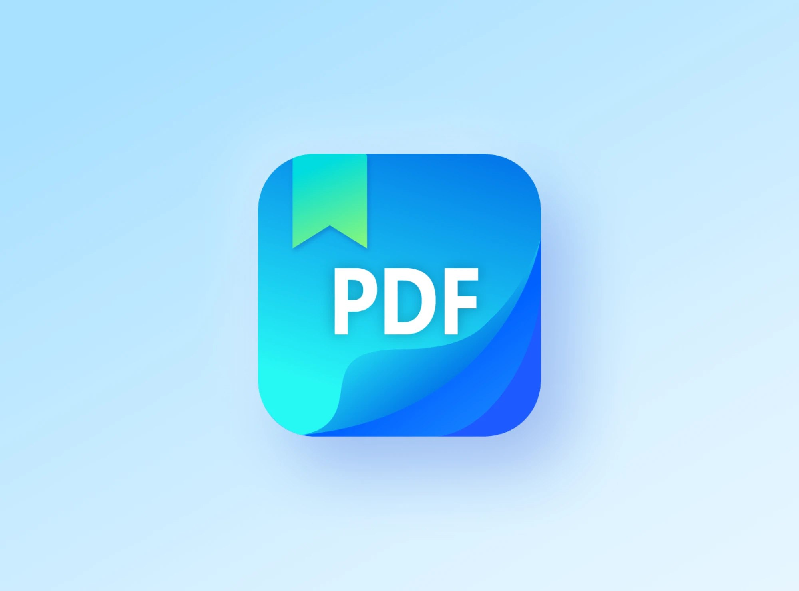
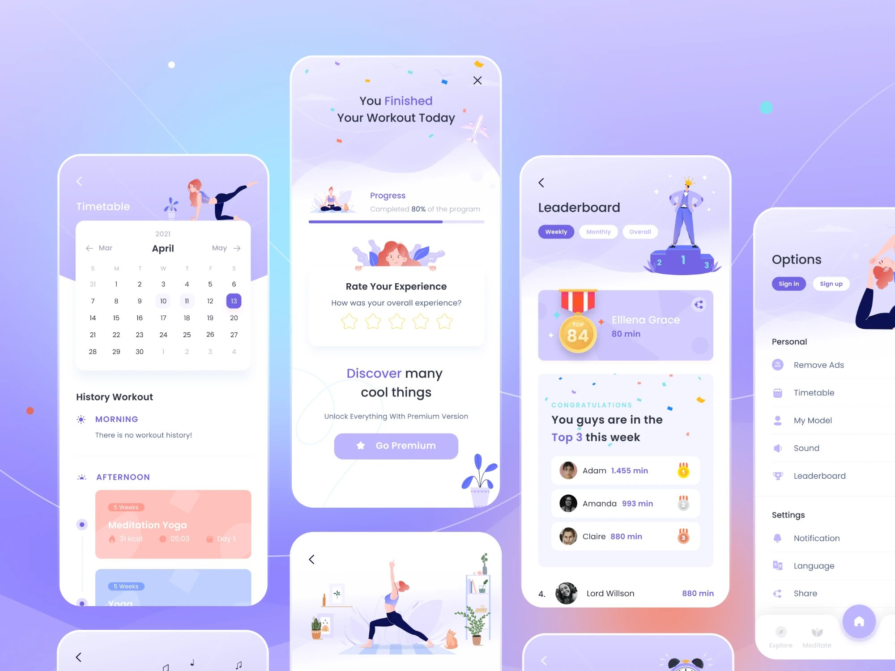
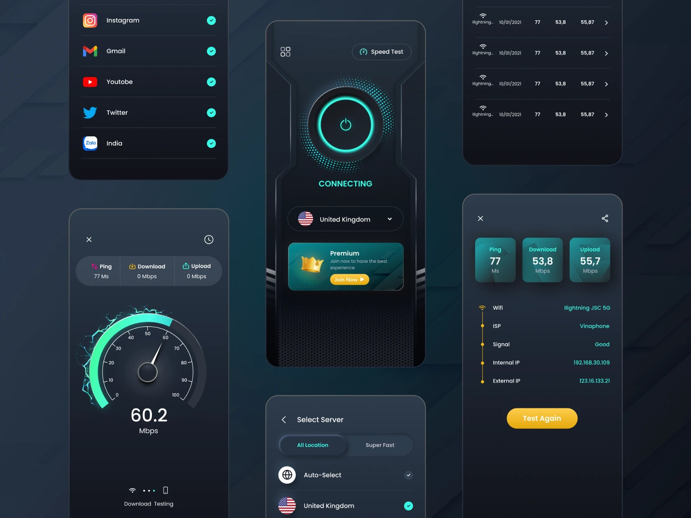
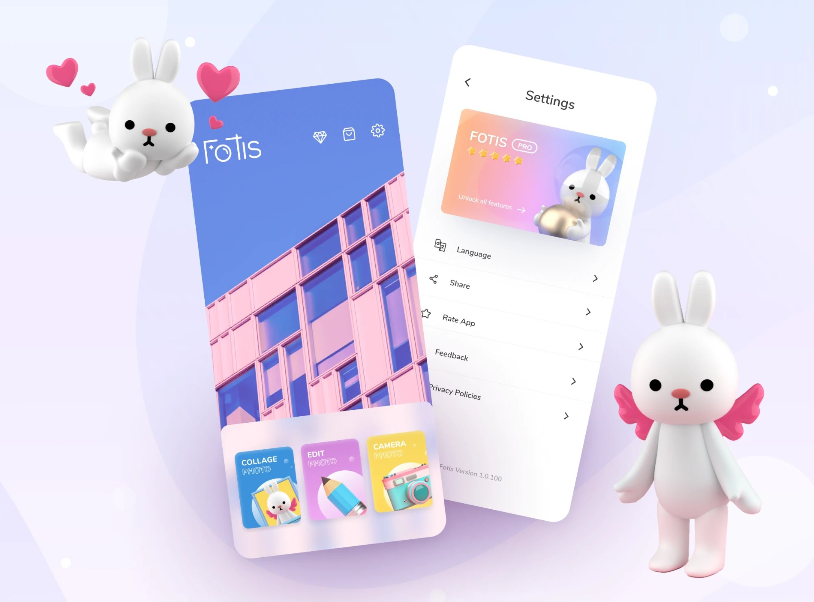
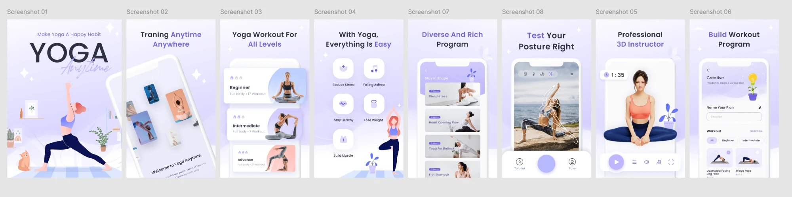

Mobile Apps

Những sản phẩm đầu tiên: thiết kế, đo lường và tối ưu để ứng dụng được tải và giữ chân người dùng.The early products: designing, measuring and optimising apps so they get downloaded — and kept.
01 — Vai trò01 — RoleTừ store listing đến từng màn hìnhFrom store listing to every screen
- Dẫn dắt và định hướng thiết kế cho team UI/UX, đảm bảo nhất quán phong cách và chất lượng.
- Nghiên cứu, lập kế hoạch, phân tích ứng dụng tham chiếu về chức năng và giao diện.
- Xây dựng wireframe, user flow, style guide và thiết kế visual; tham gia nghiên cứu người dùng.
- Thiết kế banner, logo cho Google Play & App Store; phối hợp marketing làm ấn phẩm social.
- Đo lường và tối ưu trải nghiệm để tăng tương tác và tỉ lệ chuyển đổi.
- Led and directed design for the UI/UX team, ensuring style consistency and quality.
- Researched, planned and analysed reference apps’ functions and interfaces.
- Built wireframes, user flows and style guides, created visual designs and took part in user research.
- Designed banners and logos for Google Play & the App Store; worked with Marketing on social materials.
- Measured and optimised the experience to lift engagement and conversion.
02 — Quy tắc02 — RulesQuy tắc thiết kế app iconApp icon design rules
Icon là thứ người dùng nhìn thấy đầu tiên trên store, trước cả screenshot. Với mỗi app, mình dựng icon trên cùng một keyline grid để cả bộ sản phẩm đồng đều về tỉ lệ và trọng lượng thị giác:
- Canvas 1024 × 1024 px, xuất hình vuông không bo góc — iOS tự áp mask bo góc; với Android, phần nội dung chính nằm trong vùng an toàn của adaptive icon.
- Hình chính bám theo keyline — vòng tròn, hình vuông và các đường chéo giúp căn giữa và cân bằng khối.
- Một biểu tượng, một thông điệp — không dùng chữ nhỏ hay chi tiết vụn; nếu có chữ (như “PDF”) thì phải là chữ lớn, đậm.
- Kiểm tra ở cỡ nhỏ — icon phải còn nhận ra được ở kích thước trong Settings và thông báo, không chỉ trên màn hình chính.
The icon is the first thing people see on the store — before any screenshot. For every app I built the icon on the same keyline grid, so the whole portfolio stays consistent in proportion and visual weight:
- 1024 × 1024 px canvas, exported square without rounded corners — iOS applies its own mask; on Android the key content sits inside the adaptive-icon safe zone.
- The main shape follows the keylines — circles, square and diagonals keep the mass centred and balanced.
- One symbol, one message — no small text or fiddly detail; if there is a word (like “PDF”) it is big and bold.
- Test small — the icon must still read at Settings and notification sizes, not just on the home screen.
01Keyline gridKeyline grid
02Đặt icon lên gridIcon on the grid
03Kiểm tra ở cỡ nhỏCheck at small sizes
03 — PDF app03 — PDF appMỗi công cụ một màu, mỗi thao tác một chạmOne colour per tool, one tap per task
Ứng dụng gom các tác vụ PDF thường gặp vào một màn Tools: Merge PDF, Split PDF, Image to PDF và PDF to Image. Mỗi công cụ có một màu riêng để người dùng nhớ và tìm lại nhanh; biểu tượng vương miện đánh dấu tính năng Premium.
Trong luồng Split PDF, file đã chọn luôn hiển thị ở trên cùng, bên dưới là 3 lựa chọn rõ ràng — tách các trang đã chọn, tách theo khoảng trang, hoặc tách toàn bộ — mỗi lựa chọn có một dòng mô tả kết quả để người dùng không phải đoán. Illustration nhân vật được dùng xuyên suốt để app thân thiện hơn một công cụ văn phòng thông thường.
The app brings everyday PDF tasks into one Tools screen: Merge PDF, Split PDF, Image to PDF and PDF to Image. Each tool has its own colour so people remember and find it again quickly; a crown marks Premium features.
In the Split PDF flow, the selected file stays at the top, with three clear options below — extract selected pages, custom ranges or extract all pages — each with a one-line description of the result so nobody has to guess. Character illustrations run throughout, making the app friendlier than a typical office utility.


04 — Yoga app04 — Yoga appGiữ chân người dùng bằng thói quenRetention through habit
Với app Yoga, bài toán không phải là tải về mà là quay lại tập mỗi ngày. Thiết kế xoay quanh các điểm chạm tạo thói quen:
- Timetable — lịch tập theo ngày và lịch sử buổi sáng / chiều.
- Màn hoàn thành — chúc mừng, hiển thị tiến độ chương trình và xin đánh giá đúng lúc người dùng đang có cảm xúc tích cực nhất.
- Leaderboard — bảng xếp hạng theo tuần / tháng / tổng để tạo động lực cạnh tranh nhẹ nhàng.
- Premium — gợi ý nâng cấp đặt sau khoảnh khắc thành công, không chặn giữa buổi tập.
For the Yoga app the challenge wasn’t downloads — it was getting people to come back and practise every day. The design centres on habit-forming touchpoints:
- Timetable — a daily schedule plus morning / afternoon history.
- Completion screen — celebrates, shows programme progress and asks for a rating at the moment people feel best.
- Leaderboard — weekly / monthly / overall rankings for light, friendly competition.
- Premium — the upgrade prompt comes after a moment of success, never in the middle of a session.

05 — VPN app05 — VPN appMột nút kết nối, mọi thông số trong tầm mắtOne connect button, every metric in view
App VPN dùng giao diện tối với điểm nhấn xanh ngọc để tạo cảm giác công nghệ và an toàn. Màn chính chỉ có một nút nguồn lớn cùng trạng thái kết nối và quốc gia đang chọn — thao tác chính luôn ở giữa màn hình.
- Select Server — chia tab All Location / Super Fast, có Auto-Select cho người không muốn chọn.
- Speed Test — đồng hồ tốc độ trực quan, kết quả Ping / Download / Upload và thông tin mạng (Wi-Fi, ISP, IP).
- Danh sách ứng dụng — chọn app nào đi qua VPN.
The VPN app uses a dark interface with a teal accent to feel technical and secure. The home screen has just one big power button with connection status and the selected country — the main action always sits centre screen.
- Select Server — All Location / Super Fast tabs, with Auto-Select for people who don’t want to choose.
- Speed Test — a visual speedometer, Ping / Download / Upload results and network details (Wi-Fi, ISP, IP).
- App list — choose which apps go through the VPN.

06 — Fotis app06 — Fotis appNhân vật 3D làm nên cá tínhA 3D mascot as the personality
Fotis là app chỉnh sửa ảnh với ba chức năng chính đặt ngay trên màn hình đầu: Collage Photo, Edit Photo, Camera Photo. Điểm nhận diện là chú thỏ 3D có cánh — xuất hiện ở trang chủ, các thẻ chức năng và thẻ nâng cấp Fotis Pro trong Settings — giúp app nổi bật giữa rất nhiều app chỉnh ảnh trên store.
Fotis is a photo editor with its three core features right on the first screen: Collage Photo, Edit Photo and Camera Photo. Its signature is a winged 3D bunny — on the home screen, the feature cards and the Fotis Pro upgrade card in Settings — helping the app stand out among countless photo editors on the store.

07 — Store screenshots07 — Store screenshotsScreenshot Android: bán app trong 8 khung hìnhAndroid screenshots: selling the app in 8 frames
Screenshot trên Google Play quyết định phần lớn việc người dùng có bấm cài đặt hay không. Với bộ screenshot của app Yoga, mỗi khung hình chỉ nói một lợi ích bằng tiêu đề ngắn, đậm, kèm màn hình minh hoạ đúng tính năng đó: tập mọi lúc mọi nơi, bài tập cho mọi cấp độ, chương trình đa dạng, kiểm tra tư thế, huấn luyện viên 3D, tự xây chương trình tập.
Cả bộ dùng chung nền, màu tím chủ đạo và bố cục tiêu đề để khi lướt ngang trông như một câu chuyện liền mạch.
Google Play screenshots largely decide whether people tap install. In the Yoga app set, each frame states one benefit with a short, bold headline and the screen that proves it: train anytime anywhere, workouts for all levels, a diverse programme, posture check, a 3D instructor, build your own programme.
The whole set shares a background, the signature purple and the headline layout, so swiping through reads like one continuous story.
